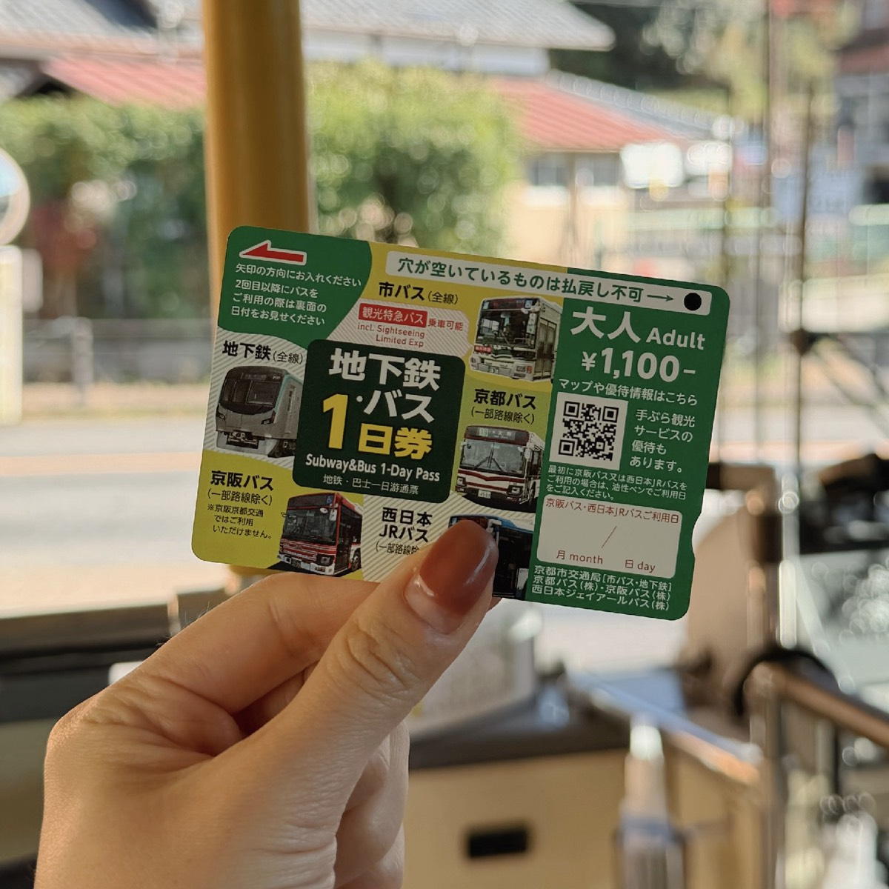
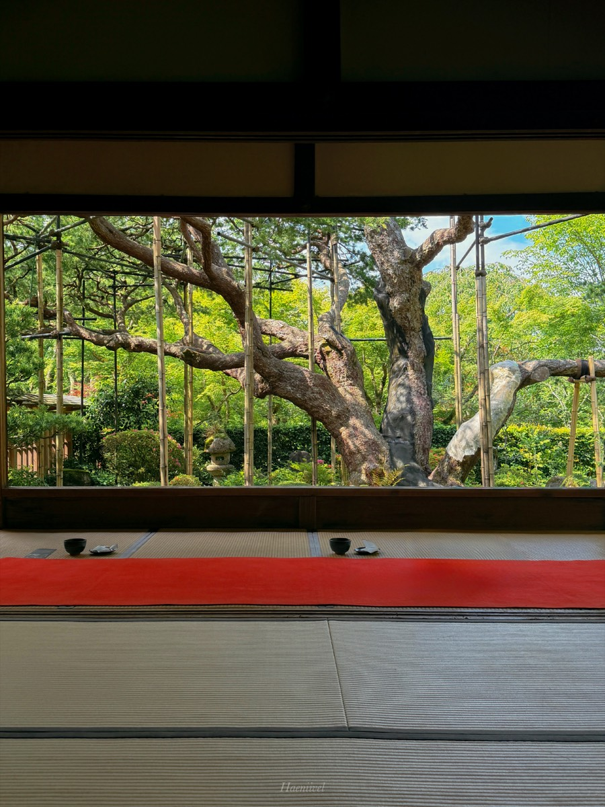
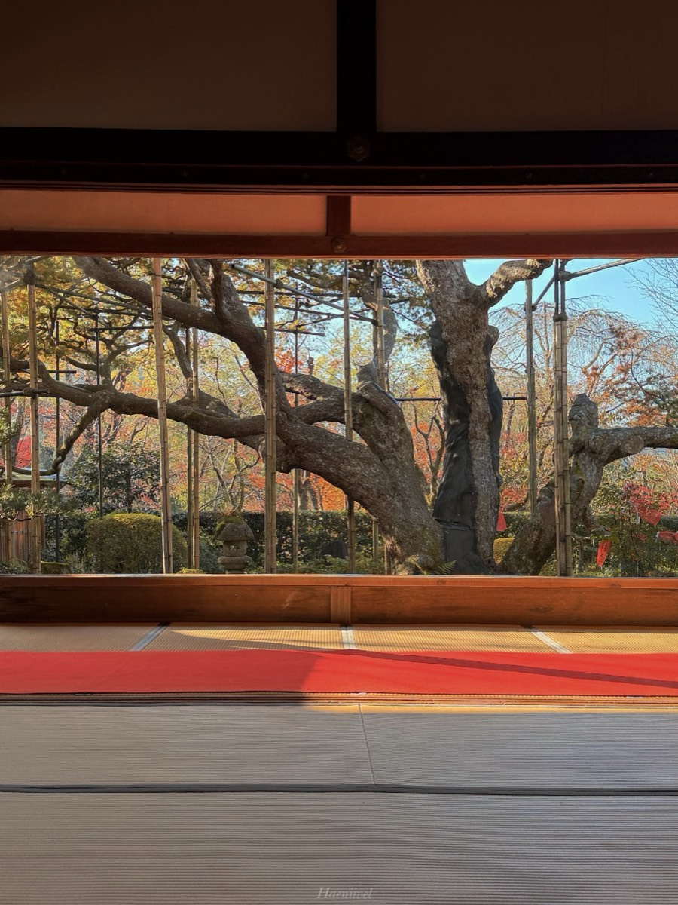
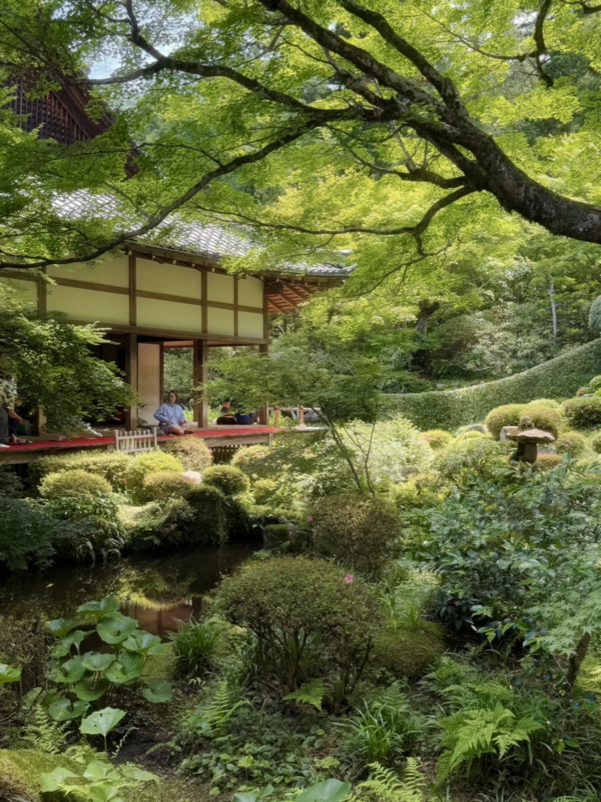
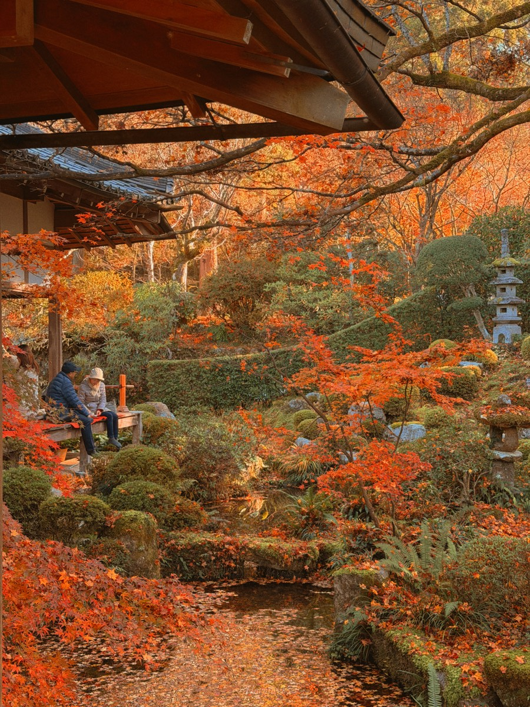
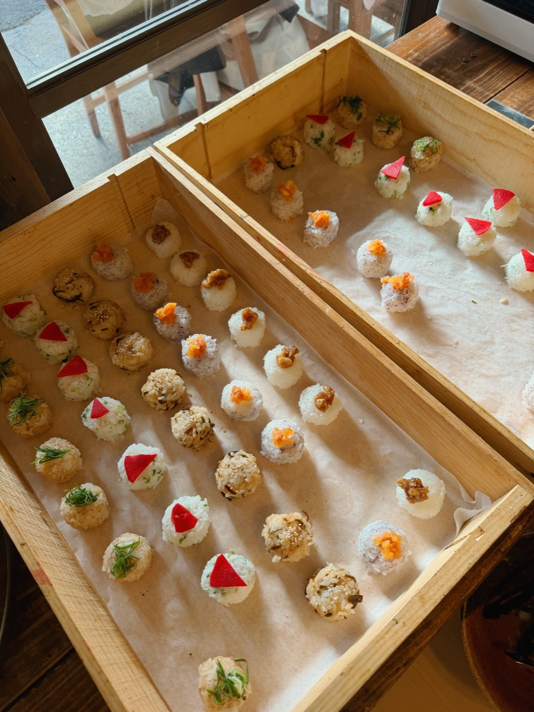
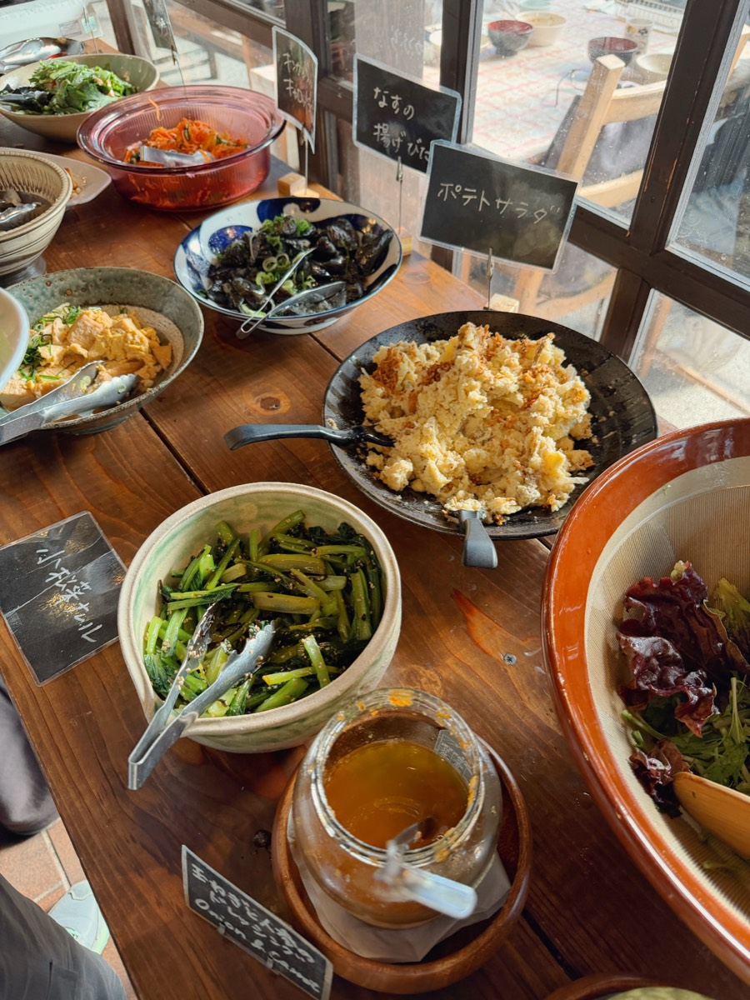
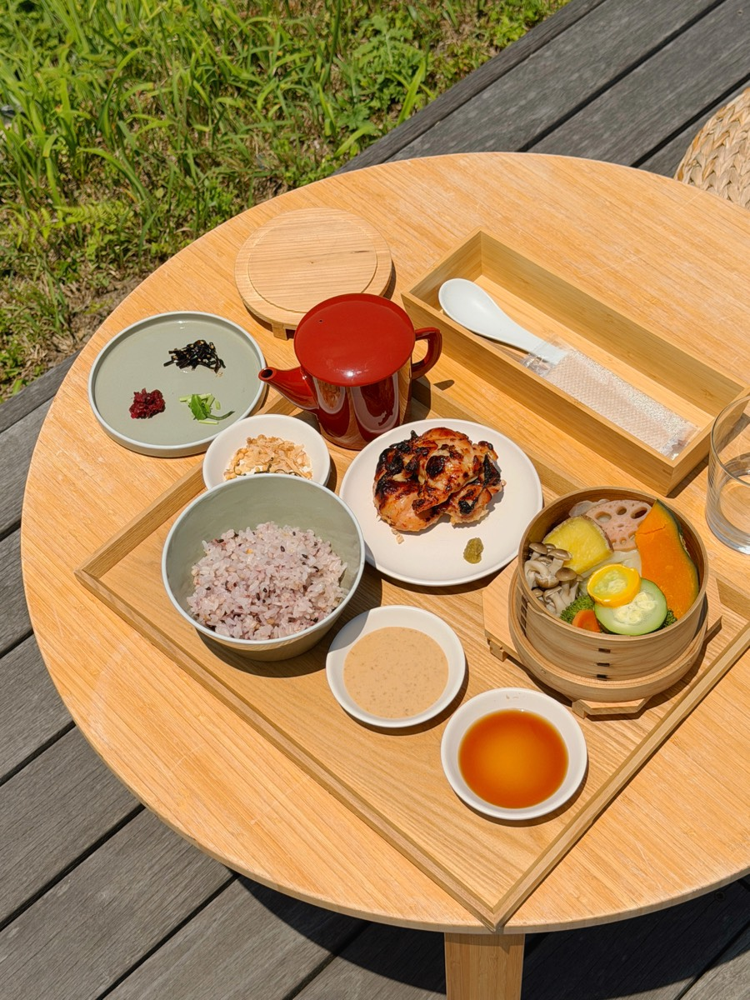

교통·코스·맛집·카페까지 모두 정리한
오하라 총정리본
추천 소요
오전 반나절
교토역에서 버스
약 60분
| 출발지 · 승강장 | 버스 | 소요 | 요금(편/왕) |
|---|---|---|---|
| 교토역 앞 C3京都駅前 | 교토버스 17 · 특17 大原행 | 약 60~75분 | 630엔 왕복 1,260엔 |
| 시조가와라마치四条河原町［四条通］ | 교토버스 17 大原행 | 약 50~60분 | 590엔 왕복 1,180엔 |

🚌 교토역으로 돌아가기
⚠️ 방문일·요일에 맞춰 최신 시간표를 꼭 확인하세요!
⛩️ 기후네로 이어가기 (오후 코스)
💡 직통이 없어 데마치야나기 환승이 편해요. 오후 기후네 코스는 다음에 더 자세히 풀게요!
호센인 - 산젠인 - 점심 - 카페 - 돌아오기
오하라에 도착하면 저는 호센인부터 가는 걸 추천해요. 조용한 시간에 말차 한 잔 마시면서 액자 정원을 바라보기 좋거든요. 입장료에 말차·과자가 포함돼 있어요.


이끼 정원과 그 사이사이 숨어 있는 와라베 지장상이 매력인 곳이에요. 너무 서두르지 말고 천천히 걸으며 보기 좋아요.


➕ 시간 남을 때 선택 코스
오하라 채소를 살린 오반자이 뷔페와 주먹밥이 대표 메뉴인 리버사이드 식당이에요. 오하라에서 제일 입소문 난 집이라 대기가 있어요.


시바즈케 저장고를 개조한 언덕 위 가게예요. 테라스에서 오하라 산자락이 보이고 점심도 가능해요. 백된장 닭구이 정식에 곁들여 나온 채소찜까지 맛있었어요. 메뉴·영업일은 방문 전 확인하세요.

오하라에서 직접 기른 채소·쌀과 지역 식재료를 쓰는 고택 레스토랑이에요. 잣코인 쪽까지 둘러보며 점심을 여유롭게 먹고 싶은 날 후보로 좋아요.
산젠인 참배길에 있는 식당이에요. 예전 오하라 향토자료관을 개조해 고택 분위기가 남아 있어서, 산젠인 관람을 마치고 참배길을 내려오며 점심 먹기 딱 좋은 위치예요.
정류장에서 도보 약 3분, 창밖으로 개울과 초록 풍경이 보이는 작은 카페예요. 채소 플레이트·드립커피·디저트가 있어서, 귀가 버스 타기 전 들르기 좋아요.
산젠인 쪽에서 커피 마시기 좋은 로스터리예요. 블렌드 커피와 원두를 팔아요. 공식 표기 09:00~17:00이지만 영업 캘린더를 확인하고 가세요.
2026년 5월 잣코인 근처에 문을 연 카페예요. 250년 넘은 초가지붕 고택을 개조한 공간에서 오하라 채소 런치 플레이트와 음료를 즐길 수 있어요. 잣코인 쪽으로 걷는 날의 카페 후보로 좋아요.
잣코인 옆 온천 숙소 ‘오하라 산소’에서 운영하는 족욕 카페예요. 따뜻한 온천수에 발을 담그고 커피나 수제 차조기 주스를 마실 수 있어요. 음료 1잔 + 타월 포함 990엔, 최대 40분 이용 가능해요. 계절에 따라 운영시간이 달라질 수 있어요.
오하라 버스 정류장에서 산젠인으로 올라가는 언덕 초입에 있는 찻집이에요. 교토시 관광 프로젝트에서 파운드케이크를 추천 메뉴로 소개한 곳이라, 산젠인을 둘러보고 정류장으로 돌아가는 길에 디저트 먹으러 들르기 좋아요.
Save to Google Maps
오하라 사찰·맛집·카페
한 번에 저장하기
사찰부터 카페까지, 내 지도에 쏙
지도 저장하러 가기 →탭하면 사찰·맛집·카페가 담긴 해니블의 구글 지도가 열려요. 내 지도에 저장해두면 현지에서 길 찾기 편해요 :)